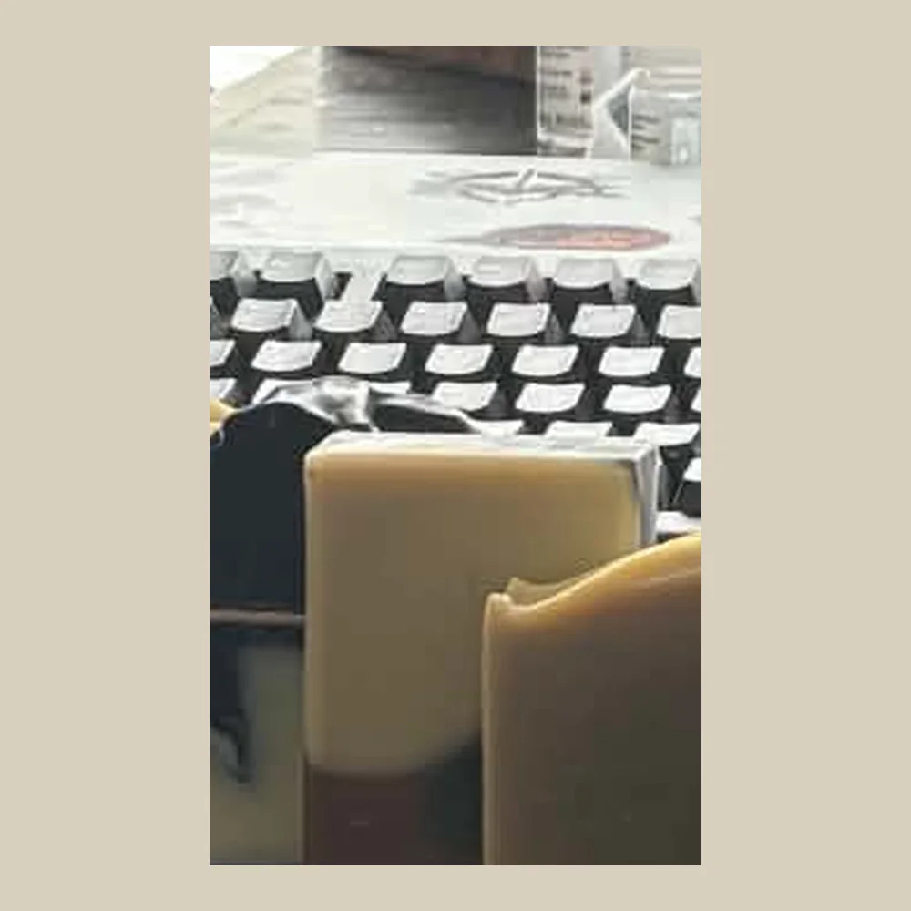

Handcrafted in Gatineau, Québec
Sweater Weather

Handcrafted in small batches, this nourishing soap is made with saponified organic olive oil, grass-fed tallow, organic coconut oil, and organic castor oil for a rich…
Ingredients
Saponified oils (Organic Olive, Grass-Fed Tallow, Organic Coconut, All-natural Castor), Organic Coconut Milk, Raw Honey, Colloidal Oats, Activated Charcoal, Cocoa Powder, Indigo Powder, Steam-Distilled Essential Oils (Cedarwood, Fir, Clary Sage, Peppermint)
Browse all products